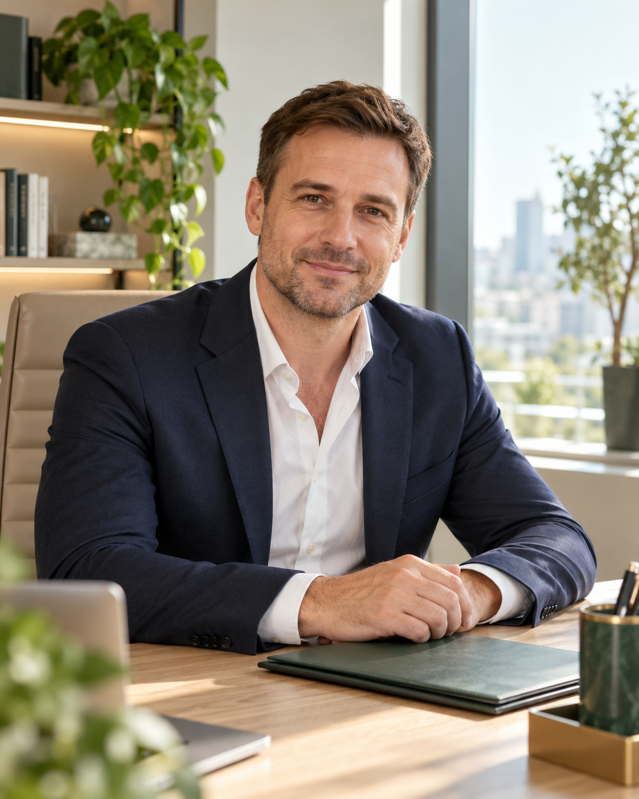

Предоплата
Оплата услуг после получения кредитных средств.
Поможем разобраться с отказами и найти подходящий кредит. Даже если ваша кредитная история далека от идеальной.
Обсудить мою ситуацию ↗✓ Без предоплаты / Начнём с консультации
Сначала деньги — потом оплата услуг.
Вы не платите до получения кредитных средств.

Оплата услуг после получения кредитных средств.
Рассматриваем вашу ситуацию, даже после отказов.
Позвоните, чтобы обсудить консультацию и встречу.
Получить кредит бывает непросто — особенно если банки уже отказывали или в кредитной истории были просрочки.
Поможем разобраться в вашей ситуации, рассмотреть возможные варианты и подготовиться к обращению к кредитору.
Никаких предоплат за наши услуги. Сначала вы получаете кредитные средства — затем оплачиваете помощь по договору.
Позвоните или оставьте обращение. Обсудим, с чего начать именно вам.
Обсудить мою ситуацию ↗Каждая заявка — отдельная история.
Вникаем в детали и объясняем,
какие варианты можно рассмотреть.
Просрочки в прошлом или отказы банков? Оценим ситуацию и поможем подобрать дальнейшие шаги.
ВАЖНО ТО, ЧТО ВОЗМОЖНО СЕЙЧАСВознаграждение за помощь — после того, как кредитная сумма будет у вас на руках. Условия фиксируем в договоре.
ПОНЯТНО С ПЕРВОГО РАЗГОВОРАОбъясним, какие документы подготовить и на что обратить внимание в предложении кредитора.
СОПРОВОЖДЕНИЕ НА КАЖДОМ ЭТАПЕДанные и период расчёта требуют подтверждения перед рекламным запуском. Процент не означает гарантию одобрения: решение принимает кредитор.
Расскажите, какая сумма нужна и с какими сложностями столкнулись.
Разбираем вашу ситуацию, обсуждаем варианты и условия сотрудничества.
Помогаем подготовить документы и пройти этапы рассмотрения заявки.
После получения кредита оплачиваете наши услуги согласно договору.
Для начала достаточно короткого разговора. Без обязательств и сложных анкет.
Можно позвонить напрямую или подготовить заявку по электронной почте.
Примеры оформления отзывов.
Тексты и имена вымышлены.
Портреты созданы с помощью ИИ.
После нескольких отказов не понимал, что делать дальше. На консультации спокойно разобрали мою ситуацию, объяснили возможные варианты и какие документы подготовить. Стало гораздо понятнее, с чего начать.
Для меня было важно заранее понять стоимость помощи. Условия обсудили до начала работы и зафиксировали в договоре. Понравилось, что не торопили с решением и подробно отвечали на мои вопросы.
Переживал из-за прошлых просрочек. Смог открыто рассказать о сложностях и получить понятные объяснения. Не обещали невозможного, а помогли разобраться, какие дальнейшие шаги можно рассмотреть.
Уже обращались к нам? Поделитесь впечатлениями по электронной почте. Реальные отзывы добавим после согласования с авторами.
Да. Расскажите о просрочках и предыдущих отказах: это поможет оценить возможные варианты. Окончательное решение об одобрении принимает кредитор.
Предоплаты за наши услуги нет. Вознаграждение оплачивается после получения кредитных средств. Размер и порядок оплаты согласовываются в договоре до начала работы.
Нет. Мы помогаем подобрать варианты и сопровождаем обращение. Решение, сумма, ставка и срок кредита зависят от кредитора и вашей ситуации.
Мы работаем в Москве. Возможность личной встречи и точный адрес уточняйте заранее по телефону +7 (916) 038-77-54.
Список зависит от выбранной программы и требований кредитора. Обсудим его на консультации. Не отправляйте паспортные данные через форму или обычное письмо.
Условия и доступность программ
обсуждаем на консультации.